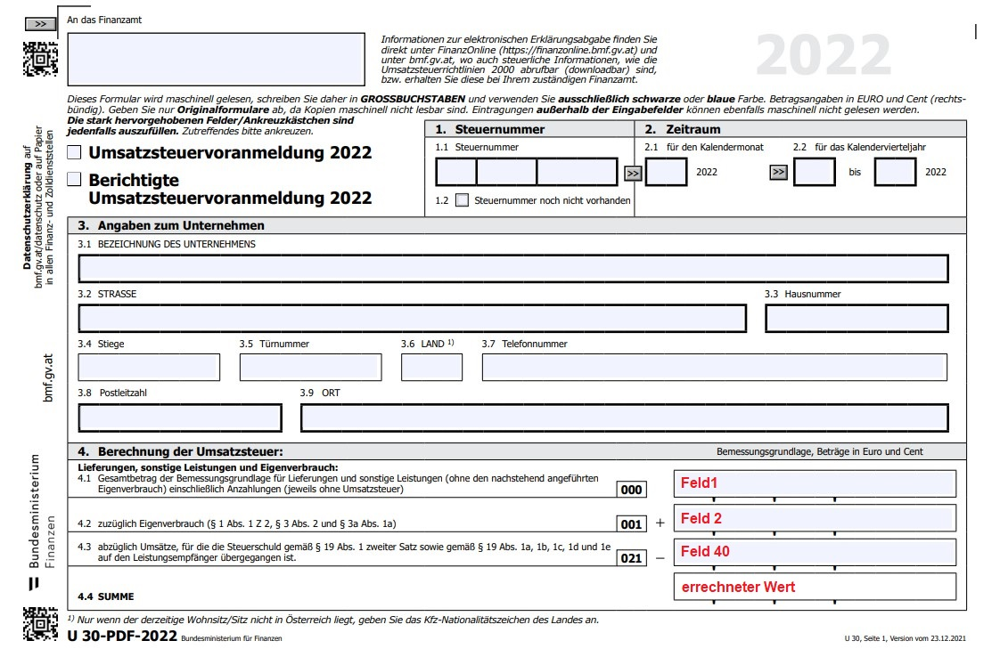
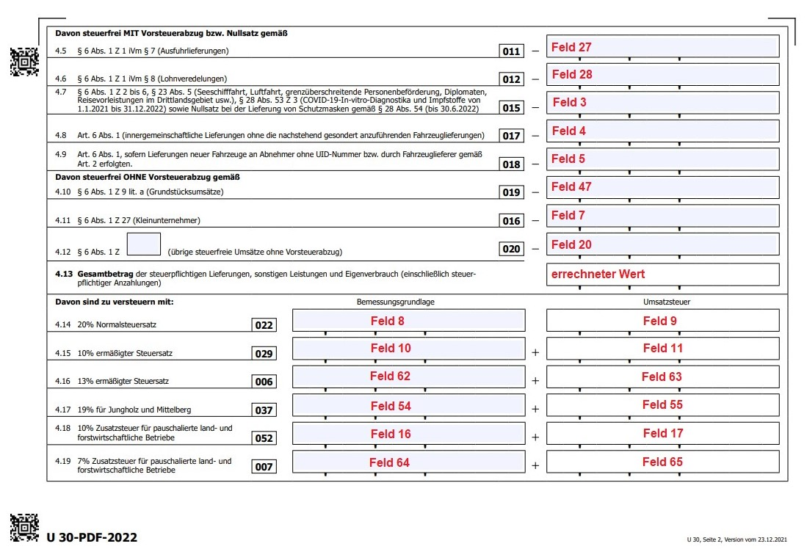
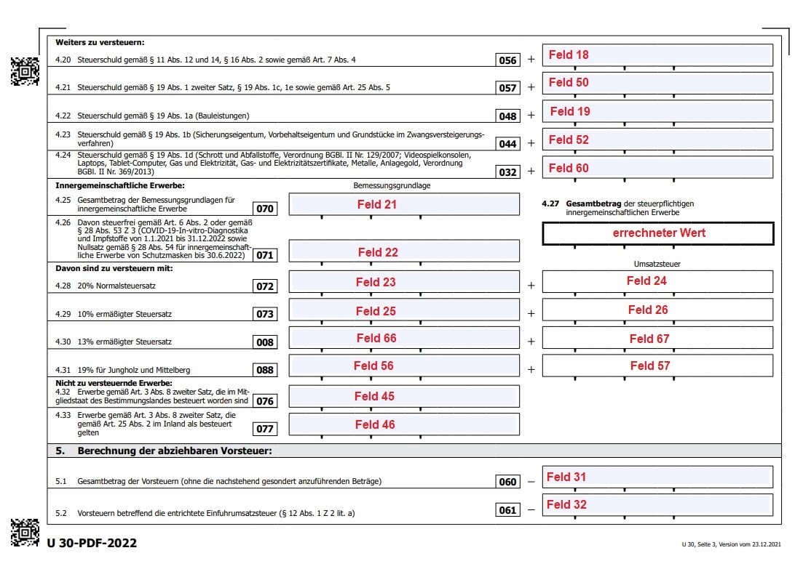
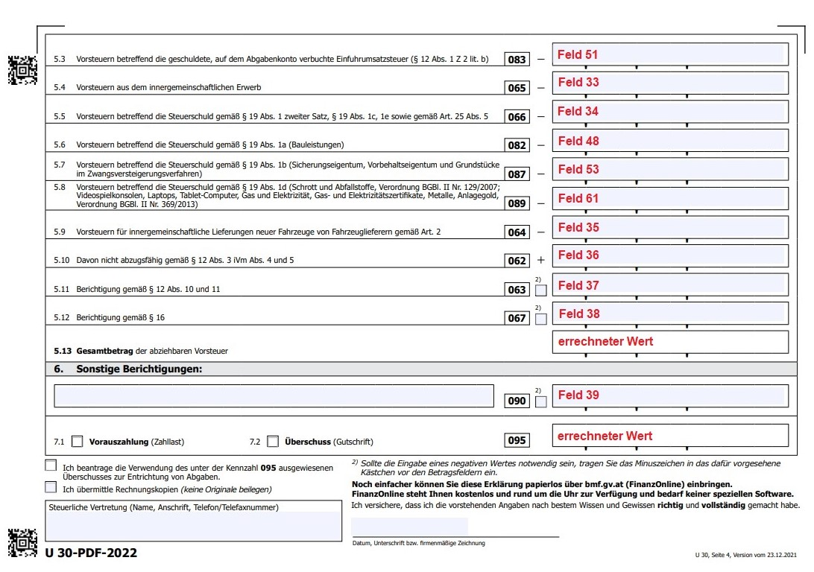
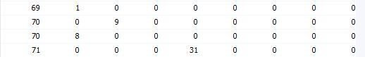
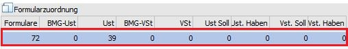

Formularzuordnung
Die Umsatzsteuervoranmeldung ab 01/2022 umfasst 4 Seiten; die Formulare in der WinLine wurden dazu mit den Nummern 69-72 definiert.
UVA-Formular 01/2022 - Seite 1 = Formular 69

UVA-Formular 01/2022 - Seite 2 = Formular 70

UVA-Formular 01/2022- Seite 3 = Formular 71

UVA-Formular 01/2022- Seite 4 = Formular 72

Beispiel einer Steuerzeile welche die Kennzahl 056 verwendet:
Für die Ausgabe des UVA-Formulars ab 01/2016 befindet sich die Kennzahl 056 auf der zweiten Seite des UVA-Formulars. Dies entspricht dem Formular mit der Nr. 58 und der Position 18 (die Position bleibt gleich).

Für die Ausgabe des UVA-Formulars ab 07/2020 befindet sich die Kennzahl 056 nun auf der dritten Seite des UVA-Formulars. Dies entspricht nun dem Formular mit der Nr. 65 und der Position 18 (die Position bleibt gleich).

Hinweis:
Bei einer bereits bestehenden Steuerzeile mit der Kennzahl 056, ist keine Änderung notwendig, die Kennzahl am UVA-Formular wird richtig befüllt.
Beispiel zur Anlage einer "normalen" Steuerzeile:
Die Position 1 enthält z. B. den Gesamtbetrag der Bemessungsgrundlagen für Lieferungen, sonstige Leistungen und den Eigenverbrauch einschließlich Anzahlungen. Für die entsprechenden Steuerzeilen (Erlöse 0 %, 10 %, 20 % etc.) heißt das, dass für das Formular 69 die Bemessungsgrundlage Umsatzsteuer in die Position 1 gerechnet werden muss.

Die Position 8 enthält den Gesamtbetrag der Bemessungsgrundlagen für 20 %ige Umsätze. D. h. in der Steuerzeile muss bei den entsprechenden Zeilen (Umsatzsteuerzeilen mit 20 %) bei der BMG UST 8 eingetragen werden. Pro Steuerzeile kann ein Formular auch öfters verwendet werden, so dass jede Steuerzeile an jeder beliebigen Position hinterlegt werden kann.
Die Position 9 enthält den Steuerbetrag der 20 %igen Umsätze. Daher muss in den entsprechenden Steuerzeilen (Umsatzsteuerzeilen mit 20%) im Feld USt der Eintrag "9" (Formular 64) erfolgen.
Beispiel einer Steuerzeile welche die Kennzahl 009 verwendet
Für die Ausgabe des UVA-Formulars ab 07/2020 befindet sich die Kennzahl 009 auf der zweiten Seite des UVA-Formulars. Dies entspricht dem Formular mit der Nr.64. Ab dem UVA-Formular 01/2022 gibt es keine 5 %igen Steuersätze und somit keine Kennzahl 009 mehr. Für Buchungen, welche noch mit einem 5 %igen Steuersatz gebucht werden müssen, erfolgt die UVA-Zuordnung in die Kennzahl 090. Die Berichtigung befindet sich auf der letzten Seite des UVA-Formulars, dies entspricht dem Formular 72 und der Position 39.
